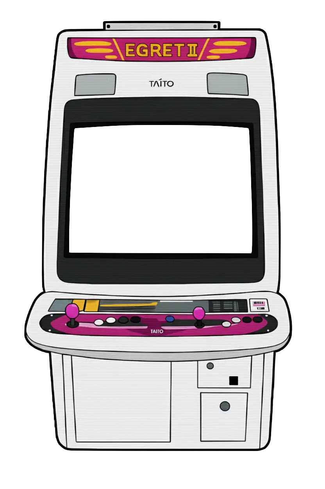

Underrated Arcade Classic
Learn about Breakers Revenge,
a lesser-known Neo Geo fighting game, easy to pick up and fun to
play !

×

Learn about Breakers Revenge,
a lesser-known Neo Geo fighting game, easy to pick up and fun to
play !
